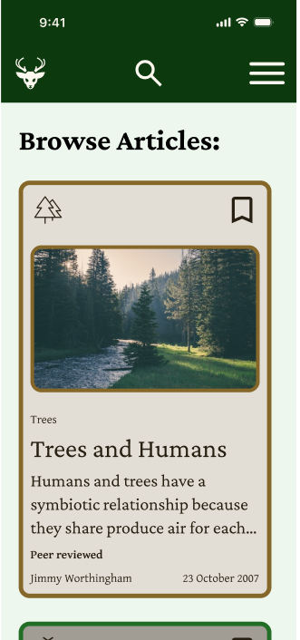
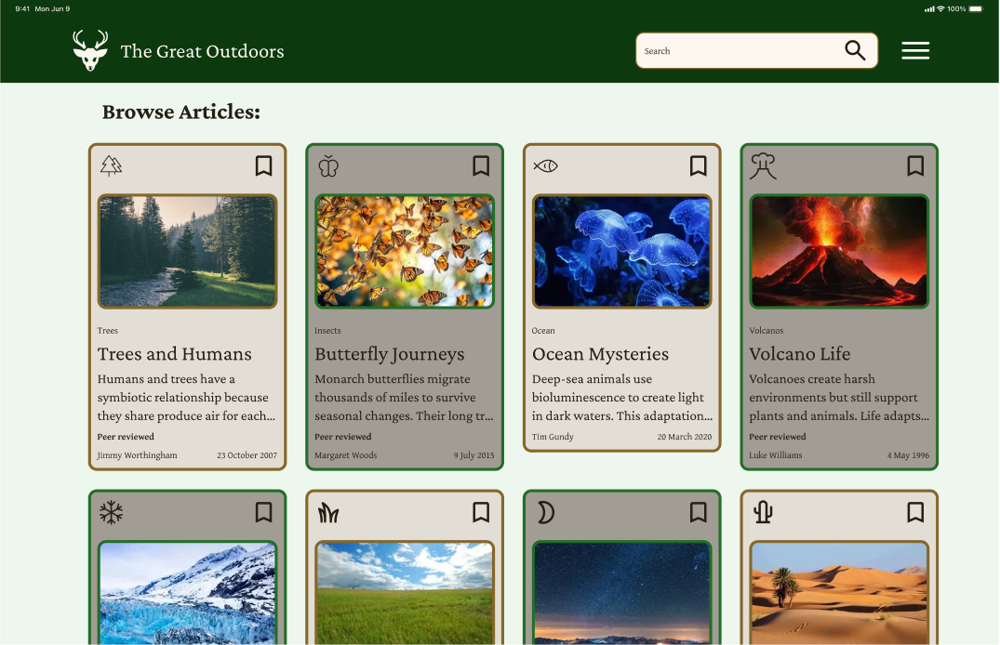

Designer
Figma
Nov 2025 – Nov 2025
Prototyping
This design was created as part of my final project for my Prototyping II class. The goal was to create an outdoorsy/nature aesthetic design for three different viewports, and make a prototyping action using variables.
For this project, I started by choosing my color palette. Because I was using an outdoors aesthetic, I chose dark green and brown for my color scheme and a dark and muted shade of the colors to match the aesthetic. A simple serif typeface that mimics what you might see on an article website, makes it feel like a professional, clean layout. Before beginning the layout, I made some components for icons, a nav bar, and a card (in vertical and horizontal variants). Once I was happy with the general layout, I added the content.

